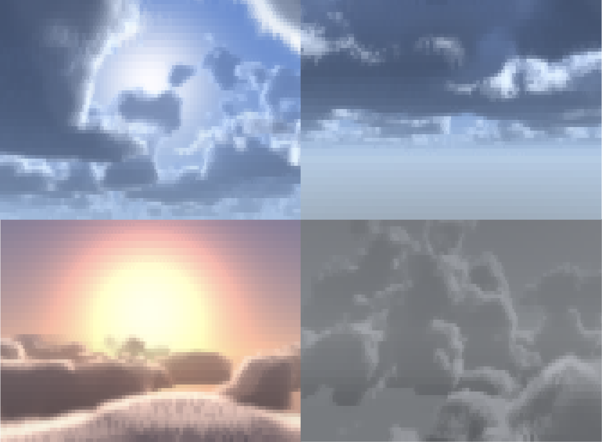
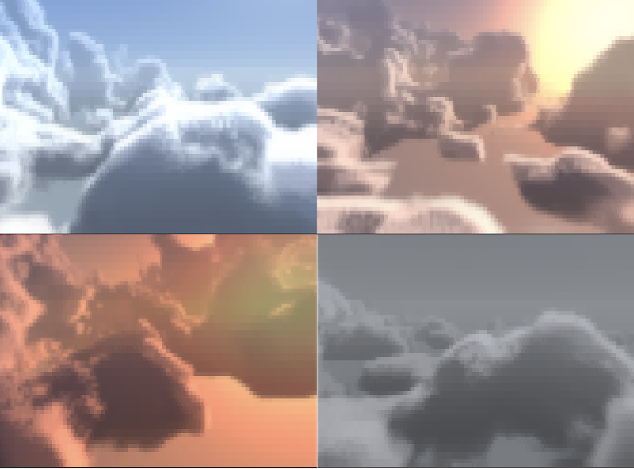
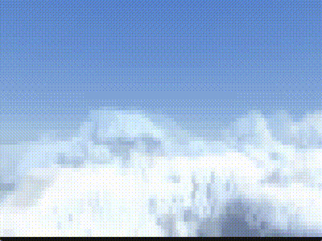
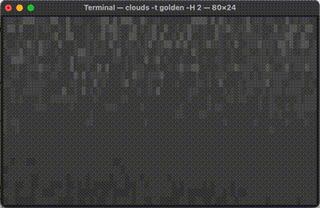
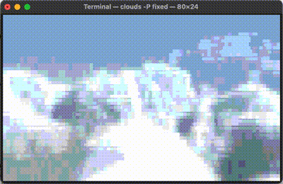
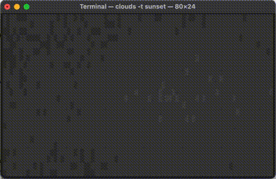

clouds.c: A Small, Feature-Rich Terminal Screensaver
Here’s a little project I cooked up with Claude Fable over the course of about two weeks. Like my other projects with Claude, I led the design and iteration and had Claude do the technical implementation.
I’ve always enjoyed terminal screensavers like cbonsai and pipes.sh, but my background in R never gave me an opportunity to make my own— I’m just not great at writing in C. That made this a particularly good project to vibecode— I know how the renderer works, but wouldn’t have been able to get the volumetric logic running in C on my own (in a reasonable amount of time to make it worth doing as a project).
github: https://github.com/gbkorr/clouds.c

nimbus, below, sol, and thunder.Features
The program is relatively feature-rich, and has quite a number of useful args.
Cloud Generation:
--coverage: Cloud sparsity.
--height: Cloud height; heigh values make for huge, billowing clouds.
Environment:
--time: Time of day; determines colors and sun elevation.
--preset: Settings preset. See §presets.
--azimuth: Horizontal (compass) sun angle; influences the direction of shading on the clouds.
Animation:
--wind: Speed of cloud movement.
--elevation: Camera Y position; 0.5 is at cloud level, so you can be above or below.
--yaw: Initial yaw angle, useful for looking into/away from the wind.
--pitch: Initial pitch angle.
Quality:
--quality: Number of raymarch steps. >60 not recommended unless prerendered with –loop.
--color: truecolor/256 ansi/mono color.
--ascii: Enable ASCII mode, not my favorite.
--ramp: Glyph ramp (transparent -> opaque) for ASCII rendering.
--fps: Desired frames per second; important for –loop.
Utility:
--interactive: Enable flight. See §flight.
--once: Render a single frame.
--loop: Prerender this many seconds, and loop playback. See §prerendering.
--output: Save --loop prerender to a file.
--file: Play saved file.

Flight!
Since the program already listens for keypressed to exit, interactive keyboard controls were a tiny addition. The arrow keys make you look around, and in --interactive mode, you fly in the direction you’re facing! In this mode -w controls your flight speed.

Prerendering
Volumetric rendering is computationally expensive, and you don’t really want a screensaver making your CPU chug. I came up with a simple solution: just prerender a set number of frames and then loop them. This comes with the added benefit of being able to save the frames to play later.
30 fps 4-second looped animation:
./clouds --loop 4 --fps 30Export to file and play file:
./clouds -loop 4 --fps 30 -o demo.clouds
./clouds --file demo.cloudsColors
The project also supports a 256-color fallback for terminals without truecolor (or select it manually with --color 256). This color banding on this is GNARLY, I think I like it even more than truecolor.



Web Demo
Because it’s 2026, I was able to make a webdemo in 10 minutes with a quick oneshot prompt to “compile it to WASM and make a drop-in iframe”. So now you can pull it up in a browser window if you don’t feel like compiling for use in the terminal1.
https://gbkorr.github.io/gbkorr/clouds/clouds.html?ARGS
ARGS has format e.g. clouds.html?coverage=0.5&elevation=0&ascii=true. –color, loop, presets, and interactive mode aren’t implemented. Use ctrl +/- to increase/decrease resolution. I recommend zooming in a bit or making your browser window small, since it’s not designed to look good at super high resolution.
Footnotes
Of course, it’s still a project designed for the terminal and this web version won’t be getting any updates. But it’s cool to have.↩︎